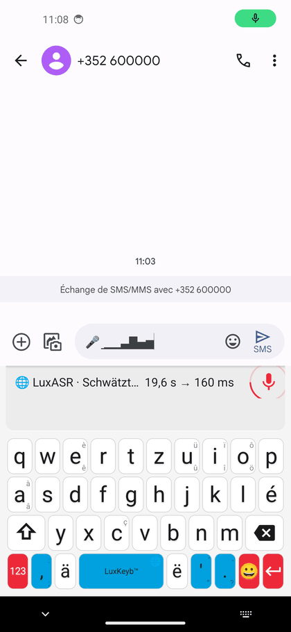

Lëtzebuergesch Clavier · Labs
Labs est l'atelier du clavier : des versions expérimentales, en avance sur la version stable, que vous pouvez essayer avant tout le monde. Celle-ci ajoute la dictée vocale luxembourgeoise : vous parlez, et le texte s'écrit au fil de votre phrase.
La reconnaissance de la voix est assurée par LuxASR, le service de reconnaissance automatique de la parole luxembourgeoise de l'Université du Luxembourg. Son moteur temps réel est publié en logiciel libre, LuxASRlive, sous licence Apache 2.0.
Le clavier envoie le son et affiche le texte qui revient : la qualité de la dictée, c'est leur travail. Merci à leur équipe, sans qui cette fonction n'existerait pas. Pendant la dictée, le son est traité par leur service : c'est la politique de protection des données de l'Université qui s'applique à cette partie.
📲 Rejoindre le test sur Google Play
Android 5.0 ou plus récent · test ouvert sur Google Play · demande les permissions micro, Internet et état du réseau
Le clavier ci-dessous est celui du simulateur, avec la dictée déjà armée. Le micro transcrit en luxembourgeois en temps réel, comme sur le téléphone ; en dessous, un second panneau affiche ce que le service traduit en français, phrase par phrase.

Paramètres › Système › Claviers › Claviers à l'écran, puis
choisissez-le comme clavier courant, au besoin via l'icône de clavier
qui apparaît en bas de l'écran quand un champ de texte est ouvert.
Le déroulé ci-dessous est mesuré, sur des dictées d'une à trois phrases tirées de conférences de presse.
Les cadences sont celles du service : premier aperçu à 1,1 s, dernier mot confirmé 0,23 s après la fin de la parole. Seule la durée de la parole est raccourcie : une dictée réelle en dure une douzaine de secondes.
La barre de suggestions laisse place à un bandeau 🌐 LuxASR · Schwätzt…, « parlez ». Le micro change de couleur, un anneau tourne autour de lui, et le champ montre six barres qui suivent votre voix : une voix trop lointaine ou une main sur le micro se voient tout de suite.
Le service relit la phrase en cours toutes les demi-secondes, et le premier bout de texte apparaît, souligné : il peut encore changer. Mesuré sur un téléphone de milieu de gamme, micro et haut-parleur compris, il arrive 1,8 s après le début de la parole.
Un mot cesse de bouger quand le service l'a vu à la même place trois fois de suite ; la fin de la phrase reste en aperçu et se corrige à chaque passage.
Il ne reste que la fin de la phrase à confirmer : deux dixièmes de seconde en médiane. Le texte perd son soulignement, il est acquis.
C'est le service qui décide que la phrase est finie : il le signale après un peu moins d'une seconde de silence, et le micro se ferme deux secondes et demie après le dernier mot entendu. Si vous reprenez la parole avant, la dictée continue. Retoucher le micro la ferme immédiatement, et les suggestions reviennent.
Le texte affiché pendant qu'on parle peut encore changer. Il est souligné tant qu'il n'est pas confirmé ; le soulignement disparaît une fois la phrase finie.
Les phrases complètes donnent le meilleur résultat. Une phrase de trois mots peut revenir vide.
Quand le réseau faiblit, le bandeau passe à 🐢 LuxASR · lues Verbindung… : le son part plus lentement qu'on ne parle. La dictée continue ; si le retard s'accumule trop, le micro se coupe, ce qui a déjà été envoyé est rendu, et le bandeau dit que la connexion est trop lente.
Dans un champ de mot de passe, la dictée est désactivée et le bandeau l'indique : le micro reste fermé.
Si la dictée ne peut pas se faire (accès au micro refusé, pas de connexion, service injoignable, connexion perdue ou trop lente), le bandeau dit laquelle de ces causes est en jeu, et le texte déjà écrit reste en place.
Nous avons essayé de faire tenir la reconnaissance dans le téléphone, pour que la voix reste dans le téléphone. Les modèles luxembourgeois que publie l'Université existent en plusieurs tailles ; nous avons fait tourner les plus légers directement sur un téléphone de milieu de gamme (Galaxy A21s), sur les mêmes extraits de conférences de presse que le service en ligne. Le résultat ne nous a pas convaincus : cette dictée embarquée a été retirée de l'application, qui contient désormais la seule dictée en ligne.
| En ligne (cette version) | Dans le téléphone, modèle moyen | Dans le téléphone, grand modèle | |
|---|---|---|---|
| Mots erronés | 34 % | 40 % | 39 % |
| Attente après la phrase | 0,2 s | 9 s | 32 s |
| Place prise dans le téléphone | 0 Mo | 60 Mo | 190 Mo |
| Où va la voix | à l'Université du Luxembourg | reste dans le téléphone | reste dans le téléphone |
Ces extraits sont des conférences de presse, plus difficiles qu'une phrase dictée au calme : tous les chiffres y sont plus élevés qu'en usage courant. Ce qui compte est l'écart. Dans le téléphone, il faut attendre une dizaine de secondes après chaque phrase pour un texte moins juste : ce n'est pas encore une dictée qui fait gagner du temps. Cette piste est mise de côté pour l'instant.
L'application envoie l'audio en continu sur une connexion WebSocket, en PCM 16 bits à 16 kHz, silences compris. Le service relit la partie de l'énoncé pas encore confirmée toutes les demi-secondes à une seconde, et ne confirme un mot que lorsqu'il l'a vu à la même place dans trois hypothèses de suite ; la fin encore instable revient à part et remplace l'aperçu affiché. Le son part au fur et à mesure qu'il est capté.
Après un peu moins d'une seconde de silence, le service confirme toute la phrase en attente et le signale. Le clavier ferme alors le micro dès que deux secondes et demie se sont écoulées depuis la dernière parole entendue ; si le service ne signale rien, par exemple dans une pièce bruyante, il le ferme après cinq secondes de silence.
Réseau lent ou coupé. Le clavier mesure l'audio qui attend d'être envoyé. Au-delà d'une seconde de retard, il le signale ; au-delà de huit secondes, il coupe le micro et laisse partir ce qui reste (trente secondes au plus). Si plus rien ne part pendant cinq secondes, la dictée est abandonnée et le texte déjà écrit est gardé. Une connexion qui ne s'établit pas en cinq secondes est abandonnée aussi. Le clavier lit pour cela l'état du réseau, grâce à la permission d'accès à l'état du réseau.
Justesse. Sur vingt-deux dictées d'une à trois phrases, envoyées directement au service, il se trompe sur 25,4 % des mots. Rejouées au haut-parleur devant le micro d'un téléphone, vingt extraits plus courts donnent 26,2 %, au niveau du service seul : le passage par le micro ne coûte presque rien. Ces valeurs sont pessimistes, les transcriptions de référence omettant parfois ce que l'orateur a vraiment dit ; sur un extrait lu proprement, le service descend entre 11 % et 15 %.
Le tableau « Et sans connexion ? » compare cinq conférences de presse
(53 extraits) transcrits sur le téléphone même, avec le moteur whisper.cpp
que l'application embarquait alors, et les modèles base et small
publiés par l'Université, contre le service en ligne sur les mêmes
extraits.
C'est tout l'intérêt de Labs : vos retours décident de ce qui atteindra la version stable. Le plus utile à nous transmettre, c'est un cas précis : le modèle de téléphone, ce que vous avez dit, et ce qui s'est écrit.